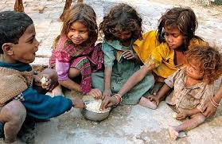

We all are familiar with the term 'POVERTY' meaning not having enough material possessions or income to satisfy basic human needs. As a result of Covid-19, many people have lost their jobs due to which they are facing trouble in paying for day to day expenses and also don't have enough to buy food for their family. As per conducted research it is forecasted that COVID-19 will push 49 million people into extreme poverty by the end of 2020.
One of the ways to cure poverty is to increase employment. It is obvious that people can only work from home these days due to lockdowns globally. But people can learn new skills like "Microsoft Office", "Web Development" and "Programming Languages" which will help them to earn money without leaving their house. People can adapt these skills by learning online through Youtube and other sites. Also, people can make money for their skills like graphic designing, singing, voice-over, digital marketing through a website known as Fiverr. You can access it by clicking "here". . Another way to reduce poverty is by initiating progressive taxes. This means that the percentage of tax will rise as income increases. Thus it helps to lessen tax burden of the poors. Government of Pakistan and of countries worldwide can give unemployment benefits to the poors. This will help the poors to pay for their basic needs.
We too can help those in need by donating old clothes/food supplies to trusted institutions so they can reach out to as many needy people as possible. Some of the instituions working on poverty are Aga Khan Foundation, Al-Khidmat Foundation, EHSAS, Fatimid Foundation.
DONATE